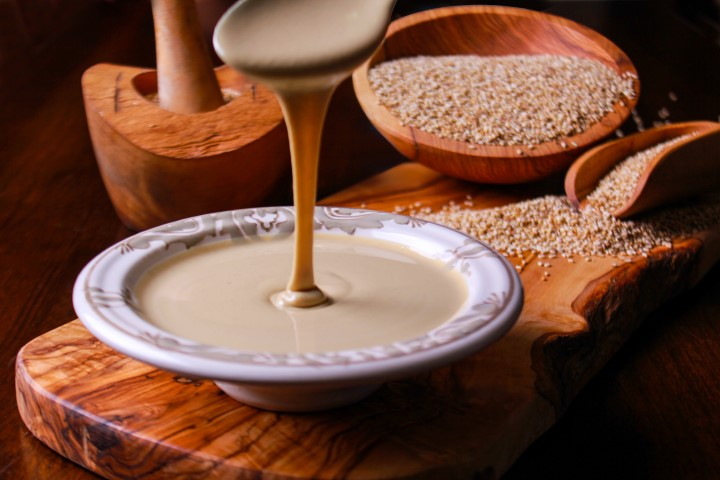

Tahini Recipe

Description:
Homemade tahini is so easy to make. Our recipe is quick and makes tahini that tastes much better than anything
you can buy at the store.
Ingredients:
- Sesame seeds. As I mentioned earlier, we prefer to use hulled sesame seeds. Most often, we
will lightly toast the seeds to bring out some of their natural nuttiness, but you can skip this step all
together if you'd like.
- Oil. To help the tahini turn into a creamy smooth paste, we add a few tablespoons of
neutral-flavored oil. A variety of oils work, try avocado oil, light and fruity olive oil, vegetable oil,
and grape seed oil.
- Salt. Salt is an optional ingredient, but I always use it. It just makes the tahini taste
better.
Steps:
- Toast the sesame seeds.I love toasting the sesame seeds before making the tahini. The
flavor is far superior this way.
If you plan to toast the seeds, we recommend doing so on the stove-top and not in the oven. Sesame seeds are
tiny and so they burn very easily.
To toast the sesame seeds, I throw them into a wide, dry saucepan over medium-low heat then stir constantly
with a spoon until the seeds darken ever so slightly in color and become fragrant.
- Process the sesame seeds until crumbly. When the sesame seeds have cooled, we throw them
into the bowl of our food processor, shut the lid then process until a crumbly paste begins to form.
- Add oil and process into a smooth cream. To help the tahini turn into an extra smooth
paste, we add a few tablespoons of neutral-flavored oil.
You can eliminate some of the oil if you would like, but the tahini won't be as smooth or pourable. To reach
a similar consistency as store-bought, we've found 3 to 4 tablespoons of oil should do it.
After more processing, a few stops to scrape the bottom and sides of the bowl and a little more processing
after that, the tahini is done. Extra smooth and ready to use in whatever recipe you like.